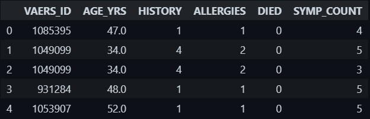
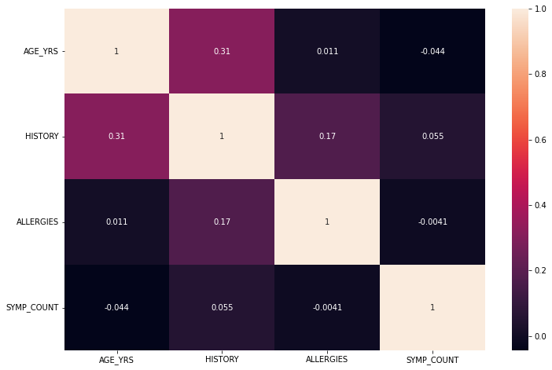
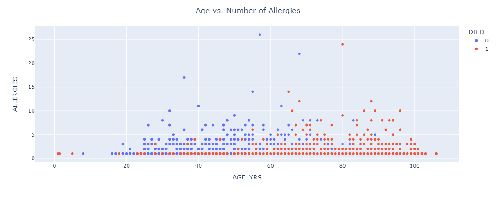
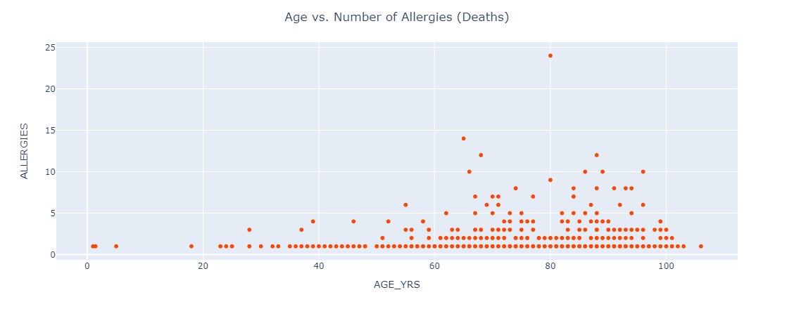
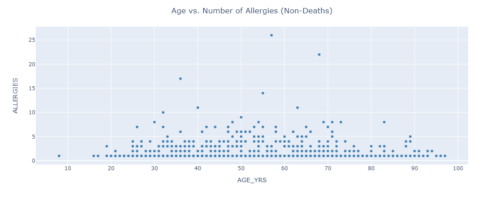
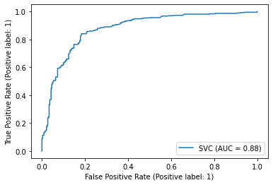
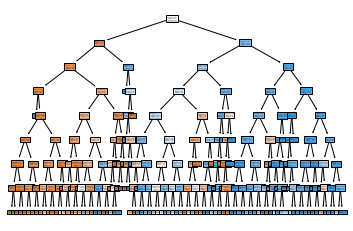
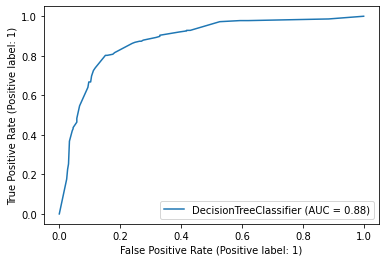

Though COVID-19 vaccine has proven its efficiency, many still remain hesitant due to potential side effects. Side effects include the majority reporting mild to moderate symptoms, such as fever and fatigue, but these symptoms generally would not cause long-term conditions, though rare cases of severe symptoms or potential death are possible. We will use machine learning to build a model that helps people in the general public make a decision on as well as healthcare providers to recommend whether or not someone should take the vaccine and how severe their case might be (chance of death) if they suffer an adverse reaction of whether to take the vaccine or not by predicting a person's chance of death from taking the vaccine given indicating factors, such as age and gender.
There are a couple of reasons why we want to tackle the challenge of vaccine hesitancy through this project. The first is that a large enough portion of the population is hesitant to get the vaccine because herd immunity is far from achievable at the current level. Specifically, only about 83% of Americans have received at least one dose while only 71% is fully vaccinated. According to the Mayo Clinic, “94% of the population must be immune to interrupt the chain of transmission” of COVID-19, a highly optimistic goal at this rate. The second reason why we chose this issue is due to new developments in COVID-19 and the fight against it. This includes the fact that the FDA has authorized the vaccine even for children under the age of 5, a fourth dose expected to be available to all Americans very soon, and COVID cases recently rising due to the raging BA 5 variant. These developments give lots of opportunities for misinformation to expand beyond what has already been spread.
We have decided to use the Vaccine Adverse Event Reporting System (VAERS) dataset compiled by the Department of Health and Human Services. It consists of over 34,000 reported incidents of adverse reactions to various vaccines, among them the COVID-19 vaccine.
A major problem with this dataset, however, is that its formatting is inconsistent as data is frequently missing from some cells or structure of data across rows and columns varies from cell to cell. For example, symptom and allergy reporting does not have a consistent delimiter, and these may be important features in predicting someone's risk of death or other adverse effects from taking the COVID vaccine. Also, our target variable, whether or not someone died, has a lot of missing rows (empty, marked N/A, or equivalent), so this limits the amount of data that we can work with as well as the balance of our data. This is likely due to the fact the dataset is a compilation of adverse event reporting from people across the United States and consistency would be very hard to enforce among such a large population.
To better feed the data into our model, we dropped unnecessary columns and rows which had missing data in their feature columns. The features that we ended up using were a person's age (“AGE_YRS”), the number of pre-existing conditions the have (“HISTORY”), the number of allergies (“ALLERGIES”), and the number of symptoms they experienced after the vaccination (“SYMP_COUNT”). We thought that the number of pre-existing conditions and allergies would have quite a correlation since someone's allergies would comprise a part of their pre-existing conditions. However, this is largely not the case as given by our correlation matrix below. Thus, we decided to keep both features. For the “DIED” column, we had 6% of the data being positives (“Y”, which means the person died), so our data had to be balanced out. For this, we assigned the rest of the rows as negatives (possible since people rarely die of the vaccine) and randomly sampled an equivalent number of these negative rows, which helped to balance out the data we fed into our models. By the end of our cleaning process, we fed in 3,466 samples (1,733 positives and negatives) to our models with a train-test split of 0.8 for training and 0.2 for testing. Despite its shortcomings, this dataset is quite a detailed compilation which we worked with fairly successfully to predict a person's chance of dying from the COVID vaccine.
Below is a preview of our data:
Here is the 5-number summary of our cleaned data ("DIED" = 0 means non-death while 1 means death):
| Feature | Minimum | Mean | Median | Maximum | Std. Dev. |
|---|---|---|---|---|---|
| Age (years) | 1 | 63.7 | 65 | 106 | 20.5 |
| History | 1 | 3.2 | 1 | 54 | 3.9 |
| Allergies | 1 | 1.6 | 1 | 26 | 1.6 |
| Symptoms | 1 | 3.5 | 4 | 5 | 1.6 |
From the above table, we can see that age has a large standard deviation relative to the other features. However, standardizing this feature led to worse results in our models, so we left it as is. Below, we have included the correlation matrix between our features:
As you can see, the features are largely independent of one another. The pairing of age and history as well as history and allergies had a moderately positive correlation but this is not strong enough to have an effect on the model prediction if we fed both of them in. As a result, we did not conduct any further dimensionality reduction on the dataset.
Below is a visual preview of our dataset. Here, we have plotted a person's age next to the number of allergies that they have. Below it are the same plots for only the positive (died) and negative (did not die) samples respectively.
  As you can see, there is a fair amount of overlap between these two features in terms of the positive and negative cases. However, the positive data is more right-heavy while the negative data is more evenly distributed but situated to the left of the positive data. As such, there seems to be a possible decision boundary that could separate the two classes, albeit with quite a bit of error. This behavior is relatively consistent across all feature pairs.
We used sklearn as our Python library to build, train, and test our models. Furthermore, we used pandas to read and write our data from the .csv files and matplotlib and plotly to visualize our data.
Our initial attempts at a model for our data, which we implemented in the midterm report, considered a combination of discrete and continuous variables that did not yield much cluster separation. These features include the number of days someone spent in the hospital and how many doses of the vaccine they had. Although these were considered to be possibly helpful, we ended up dropping them to find better and more easily ascertainable features, such as the number of allergies and symptoms one has.
For our midterm report, we used various models to try and classify our data, including K-means, Random Forest, and MLP. However, since our data did not allow for a good classification boundary, these algorithms fared around 50-55% accuracy. As such, we tried ways of manipulating our data so as to make our data more friendly to our models.
The methods we used included taking the limited number of death samples in our dataset and using the mean and covariance of that population's features to generate more data just like it. However, when we merged this generated data with our current data and assumed the points without death data to be negative samples, our overall data ended up having all positive samples since our negative samples were dropped due to other empty features. Based on the above approach, we tried to use the mean and covariance to classify existing samples within our original dataset as being deaths based on the probability outputted by a multinormal pdf. However, these results yielded only positive cases and we were thus not able to use the resulting data in our models.
After these methods failed, we decided that the main problem lay in the features that we selected. Hence, we scoured the vaccination and symptoms datasets to try to identify features that we could work with. The result was age, history, allergies, and symptoms. We plotted these features and found that an at least somewhat discernible decision boundary existed between the two clusters for each feature. As such, we inputted these models into SVM, Decision Tree, and Logistic Regression models and manipulated the hyperparameters of each to yield more accurate results. Here is a more in-depth look into each algorithm:
We used sklearn's SVM classifier, SVC, to classify our data into deaths and non-deaths. Although our data was not linearly separable and had some overlap, we felt that SVM could possibly yield better accuracy as it would project our data to a different dimension than what we had, which may make the data more linearly separable. We thought that this would show an improvement as opposed to Logistic Regression. Our SVM model used a linear kernel since the other options, such as polynomial SVM, yielded consistently worse accuracy, specifically 2% worse than the linear model. We also left the C value to the default of 1 since changing it had a negligible effect on its performance, but instead increased SVM's runtime as we increased C. The C value is directly proportional to how wide we want our decision boundary's margin to be when classifying points, so since we had quite a bit of overlap between classes, a margin would not be of much use to our model, which may explain the negligible effect on accuracy.
Our data was not linearly separable, and so the Decision Tree algorithm may not look like the best method. However, we felt that given the nature of our data, that there are often constraints beyond which someone's condition becomes serious. For example, if a person is over 90, their risk of death from the vaccine would increase substantially, especially since they may also have a long history of conditions and much more severe and numerous symptoms. Thus, we felt that a Decision Tree classifier would fare well. We set the DT to use entropy, or the uncertainty of the resulting outcomes, to judge the quality of a split. For example, if during training, a split yields positives of 90% and negatives of 10%, then our split may be overfitting as it yields a disproportionate number of positives compared to negatives, meaning our entropy is relatively low. Thus, we would try to use majority voting for that split and make it decide that all inputs are outputted as positive. Also, we limited the maximum depth of our tree (how many layers of nodes it has) to 8 as that yielded the optimal performance measures (neither underfit nor overfit).
To check if SVM was an improvement on normal linear classification, we used Logistic Regression to try and classify our data. We faced the same challenges as in SVM and set the solver to LBFGS, which uses the second derivative of the objective function (second gradient) to reach an optimum. This configuration yielded the best results, but they were very similar to that of SVM. Hence, SVM did not significantly improve on normal classification methods.
Here are the results for SVM:
| TN: 256 | FP: 72 |
| FN: 64 | TP: 302 |
Decision boundary: y = 0.399x + -24.530
As we can see from the above metrics and the graphs, SVM performed fairly well. However, there is quite a bit of overlap between the two classes with respect to the decision boundary. To delve deeper, we look at the precision and recall, which measure the quality and completeness of a decision boundary respectively. These can be derived from the confusion matrix and show that the model is still quite accurate. Furthermore, we can consider the ROC-AUC curve, which tells us how much our model can actually separate our data. This measure is also very high (1 means no overlap between classes), meaning that our model is overall very solid. Below, we have included our SVM ROC-AUC curve:
Here are the results for DT:
| TN: 268 | FP: 62 |
| FN: 54 | TP: 310 |
Above is an example of the first layer of our DT decision path. As you can see, the model checks whether the age is less than or equal to 65. It then checks if the input's history is less than or equal to 6.5 or if the age is less than or equal to 78.5. Depending on the entropy of those decisions, the model decides how to split the data and passes the input further down the respective subtree until it comes to a decision node. Furthermore, when we tested how changing the depth hyperparameter affected our results, we settled on 8 layers as this did not overfit and achieved the maximum accuracy without doing so. Increasing the number of layers made the validation accuracy consistently decrease to around 79-80%. Also, setting our criterion to entropy (total uncertainty of a split) instead of the default gini (subtracting the sum of the square of the probabilities of one side of the split from another) increased our accuracy from around 81% to 83.3%. We used the first layer above to demonstrate how our actual DT model worked as the text is indecipherable as the layers increase. There are a total of eight layers in our DT (the optimal value) as shown below in our full DT model.
Also, here is the ROC-AUC for our DT model:
Overall, the results of DT are quite a bit better than those of SVM.
Here are the results for LR:
| TN: 257 | FP: 71 |
| FN: 65 | TP: 301 |
As you can see from the above statistics and decision boundary, LR bears an almost identical resemblance to SVM. In fact, its performance is very slightly better but by a negligible margin. We made some hyperparameter changes to LR as well. For example, we changed the solver hyperparameter from LBFGS to Newton-CG and SAG, with the former outputting similar results to LBFGS and SAG outputting worse results. As such, we decided that LBFGS was the optimal solver. Let's also take a look at the ROC-AUC curve for LR:
LR's ROC-AUC curve is very similar to that of both SVM and DT, but moreso to that of SVM. From this, we can see that no matter the hyperparameter setting of SVM, it cannot outperform LR by a significant-enough margin. Given SVM's increased runtime compared to LR, LR seems to be a better method to use than SVM.
Overall, our methods of data collection and cleaning, namely minimizing the number of features and using features with minimal correlation amongst each other, as well as our model selection and parameter tuning, were effective in predicting if a person has a chance of dying from the COVID vaccine, given that they had an adverse reaction. Of all the models, our Decision Tree model was the best-performing as it consistently had an accuracy about 2% higher than the other models.
Some limiting factors to our models' performances include no clear separation between classes and vague and inconsistent definitions throughout the data. For example, there was a largely consistent but still somewhat inconsistent comma delimiter used throughout the medical history reporting. Thus, the number of pre-existing conditions that somebody suffered from may have been fed incorrectly into the model. Also, the HHS says that an adverse reaction to a vaccine should be reported even if it is not clear that the vaccine was the cause of that adverse reaction. Thus, the data may not, in fact, be completely about people who suffered an adverse reaction largely due to the vaccine. However, given the results that we generated, we are confident that our models are a step in the right direction towards better understanding adverse reactions to vaccine and allowing healthcare providers and the general public to better understand if a person should take the vaccine and if they experience an adverse reaction, what their risk of death or other serious consequences are.